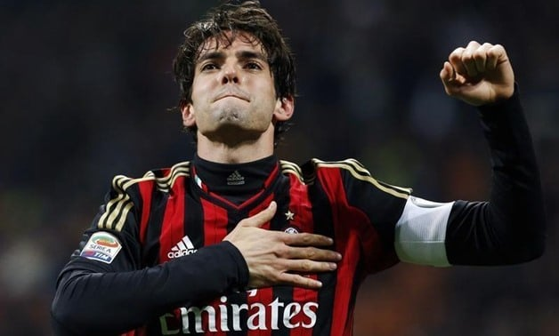

Kaká, właśc. Ricardo Izecson dos Santos Leite (ur. 22 kwietnia 1982 w Gamie) – brazylijski piłkarz występujący na pozycji pomocnika. Reprezentant Brazylii, z którą w 2002 roku sięgnął po Mistrzostwo Świata, a w 2005 i 2009 roku po Puchar Konfederacji.